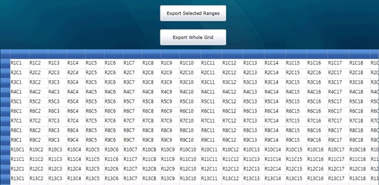
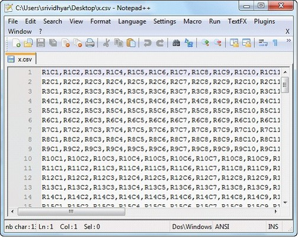
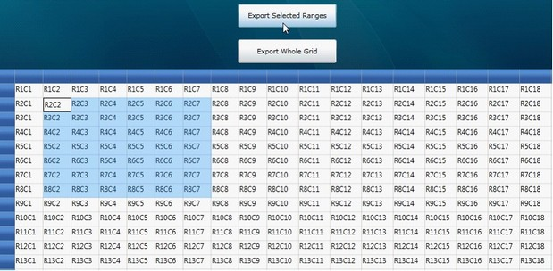
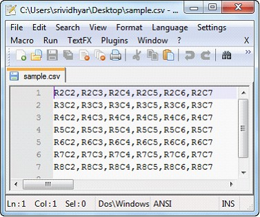

The ExportToCSV method of the GridModelExportExtensions class enables a grid control to be easily exported to CSV format. This method also allows you to select what data will be exported.
To enable exporting, the following .dll files must be added along with the default .dll files in the reference folder:
· Syncfusion.XlsIO.Base
· Syncfusion.XlsIO.WPF
· Syncfusion.GridConverter.WPF
Exporting Options
There are two options for exporting a grid control:
1. Export Whole Grid – which exports an entire grid to CSV format.
2. Export Selected Range – which exports only a selected range to CSV format.
Export Whole Grid
You can convert the entire content of a grid control to a CSV file by using the following code:
|
[C#]
this.gc.Model.ExportToCSV("Sample.csv"); |
When the code runs, the output in Figure 1 will display.

Figure 191: GridControl to be Exported
When you are ready to export the entire grid, click Export Whole Grid; the grid content will then be converted to CSV format as seen in Figure 2.

Figure 192: Exported Grid Content in CSV Format
Export Selected Range
You can convert selected grid content to CSV format by using the following code:
|
[C#] GridRangeInfoList rangeList = gc.Model.SelectedRanges; if (rangeList.Count > 0) { GridRangeInfo range = rangeList[0]; gc.Model.ExportToCSV(range, "Sample.csv"); }
|
When the code runs, the output in will be displayed.

Figure 193: Selection to be Exported
To export a selection, highlight the portion of the grid you want to export, and then click Export Selected Range; the selected grid content will then be exported to a CSV file.

Figure 194: Grid selection Exported to CSV Format